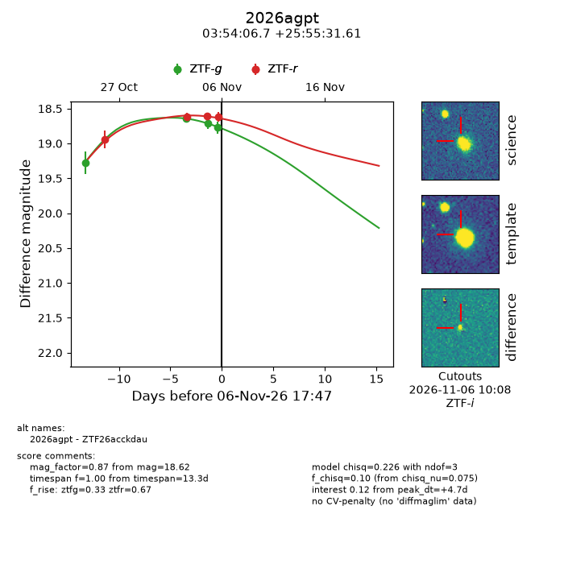
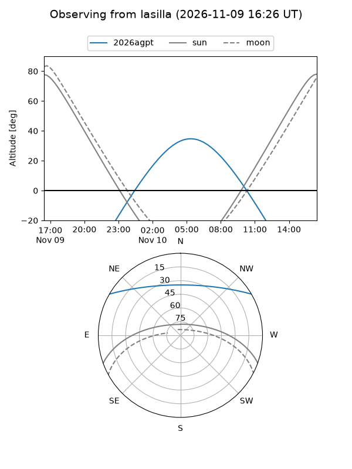
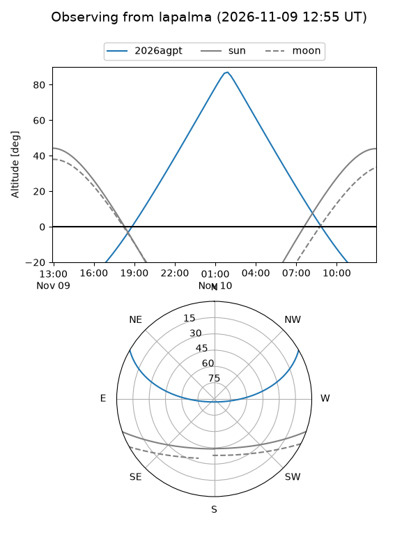
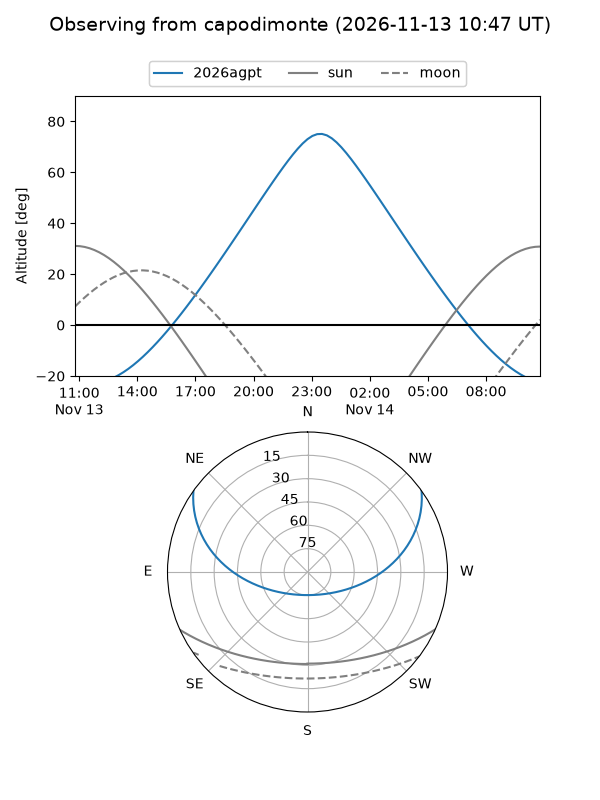
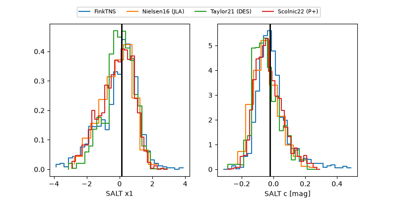

2026agpt
Target 2026agpt at 2026-11-06 17:49
Aliases and brokers:
FINK-ZTF: ztf.fink-portal.org/ZTF26acckdau
Lasair-ZTF: lasair-ztf.lsst.ac.uk/objects/ZTF26acckdau
ALeRCE-ZTF: alerce.online/object/ZTF26acckdau
YSE-PZ: ziggy.ucolick.org/yse/transient_detail/2026agpt
TNS name: wis-tns.org/object/2026agpt
Direct TNS query: direct search
alt names
ZTF26acckdau (ztf,fink_ztf)
2026agpt (tns,yse)
Coordinates:
equatorial (ra, dec) = 58.5280,+25.92545
equatorial (HMS+DMS) = 03:54:06.72,+25:55:31.61
galactic (l, b) = (166.5266,-21.09931)
Flags:
peak dt: +4.7
Photometry:
last ztfg=18.77, ztfr=18.62
4 ztfg, 4 ztfr detections
Lightcurve

Visibility



Additional plots
